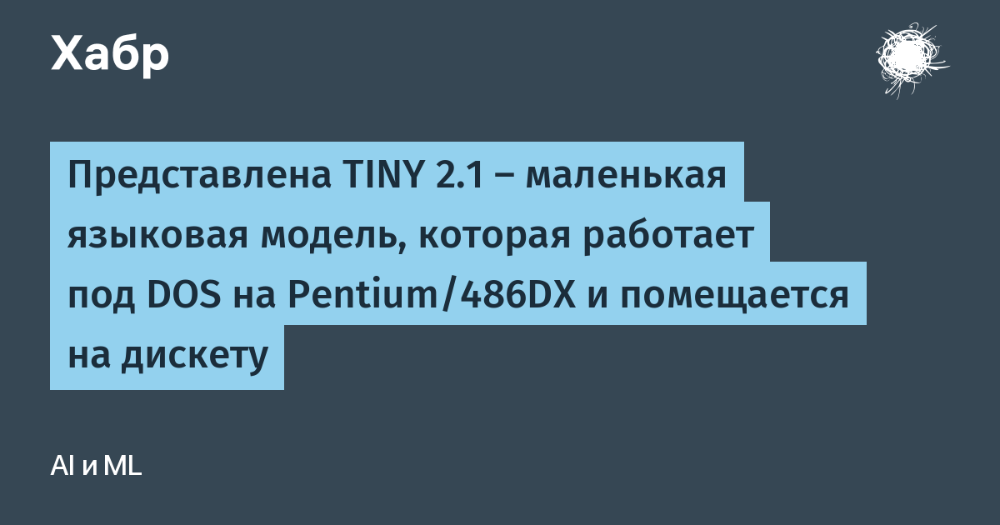

Проект TINY 2.1 — это языковая модель-трансформер, которая работает на компьютере из начала 90-х. 4 слоя, размерность 96, всего 367 000 параметров. Веса упакованы в 8 бит (по одному коэффициенту масштабирования на строку), поэтому весь «мозг» весит 380 КБ — меньше одной дискеты. Программе нужно около 540 КБ свободной обычной памяти DOS, код написан на Turbo C 2.0, собираётся одной командой.
Модель отвечает на вопросы посимвольно и обучена примерно на 3 500 фактов, каждый из которых подавался в разных формулировках. За пределами этих данных она уверенно выдумывает ответы — автор честно предупреждает об этом в README. К «серьёзной» лингвистике это отношение не имеет, зато внутри — полноэкранный неоновый интерфейс с живым монитором работы сети и «роботизированный» голос через динамик PC-speaker.
Самая обсуждаемая деталь: весь код проекта написан нейросетью Fable 5.2, а обучение провела Opus 5.5. То есть современные большие модели построили и натренировали модель, которая в 20 тысяч раз меньше их самих и помещается в память, которой сегодня не хватает даже на открытую вкладку браузера. Репозиторий открыт, состоит из одного коммита и за считанные часы набрал почти сотню звёзд.
Практической пользы у проекта нет — это демонстрация крайности и дань уважения ретро-железу. Но он хорошо показывает две вещи: трансформер как архитектура не требует дата-центра, а сжатие весов до 8 бит работает даже на абсурдных масштабах. Для тех, у кого дома пылится старый 486, — теперь есть повод его включить.